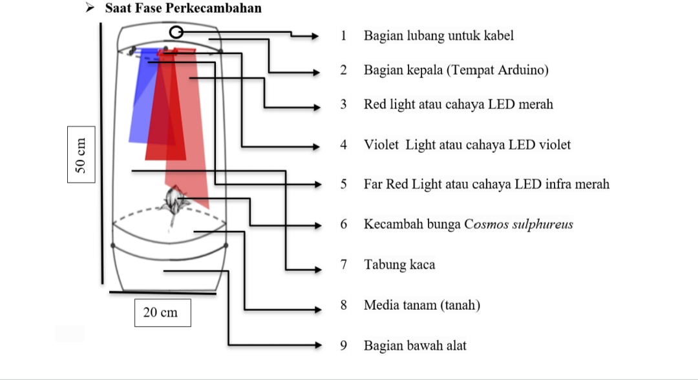
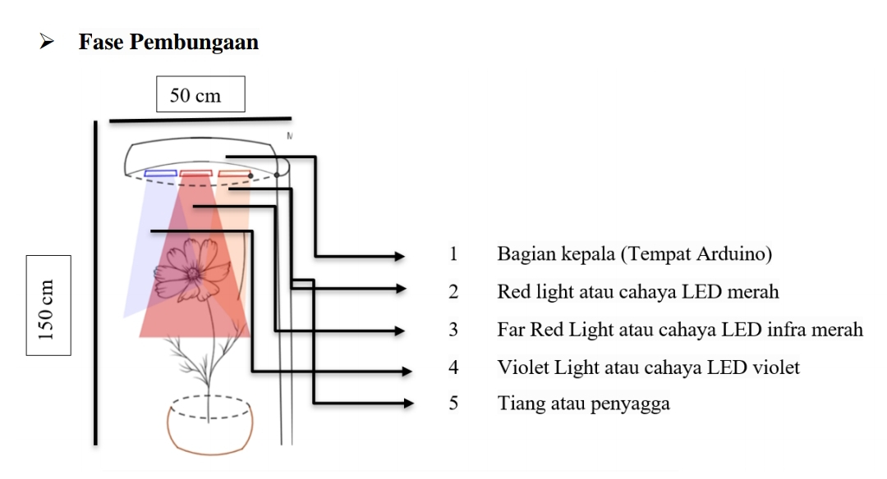
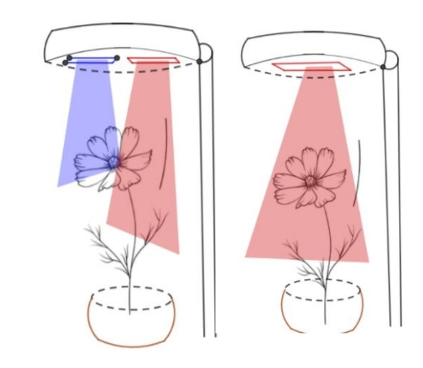
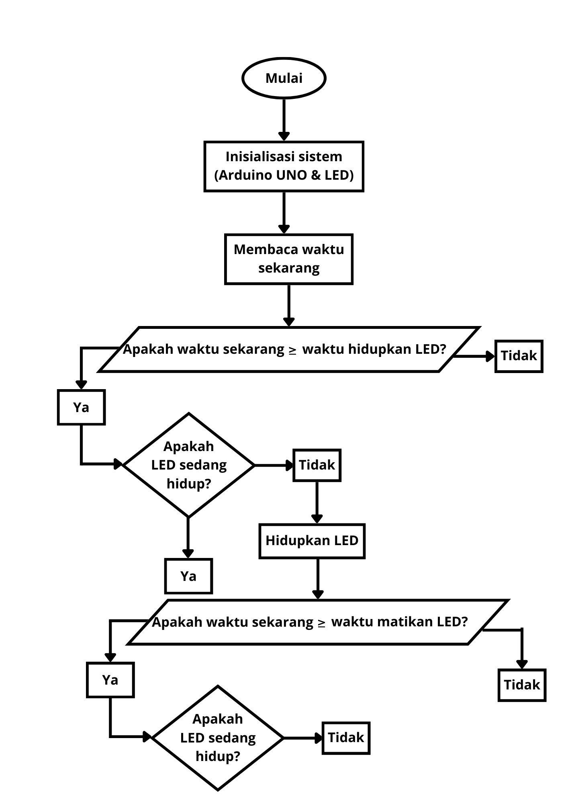

Engineering photoperiod control for accelerated flowering of Cosmos sulphureus using Arduino-based LED automation.
This project explores the optimization of Cosmos sulphureus (a short-day plant) through controlled LED photoperiod manipulation in an indoor environment. By regulating red, violet, and infrared light exposure using an Arduino Uno, the system aims to stimulate flowering multiplication and improve ornamental value.
View full proposal: Download Proposal (PDF)
Although commonly categorized as a horticultural plant, Cosmos sulphureus has strong potential to be developed as an ornamental plant. However, uncontrolled growth often results in tall stems and minimal flowering.
Since Cosmos sulphureus is a short-day plant, flowering can be stimulated by manipulating light duration relative to dark periods. This project proposes an automated LED system controlled by Arduino to optimize flowering productivity in indoor conditions.
The main objective is to evaluate the effectiveness of Arduino-controlled LED photoperiod systems in increasing flower quantity and ornamental quality.
The system utilizes programmable time scheduling to regulate different LED spectrums:
Infrared exposure during extended dark periods supports flowering induction in short-day plants.
Two system configurations were designed:



The control system was developed using Arduino (C/C++ based syntax), focusing on timed LED switching logic and stability.

Submitted to: Krenova Pati Innovation Awards
Selected as Top 20 Finalist – View Official Invitation (PDF)
Team: Dyah Indana Zulfa & Syahna Khairani Wibowo